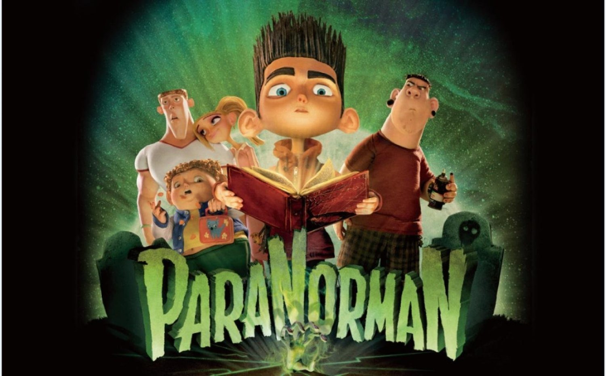
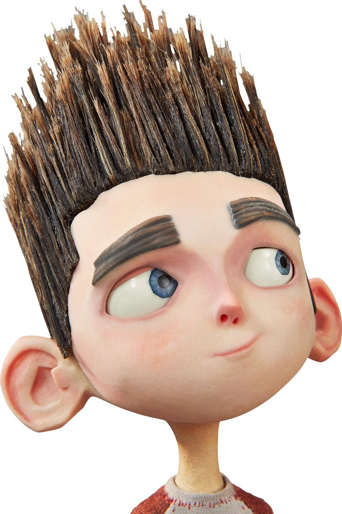
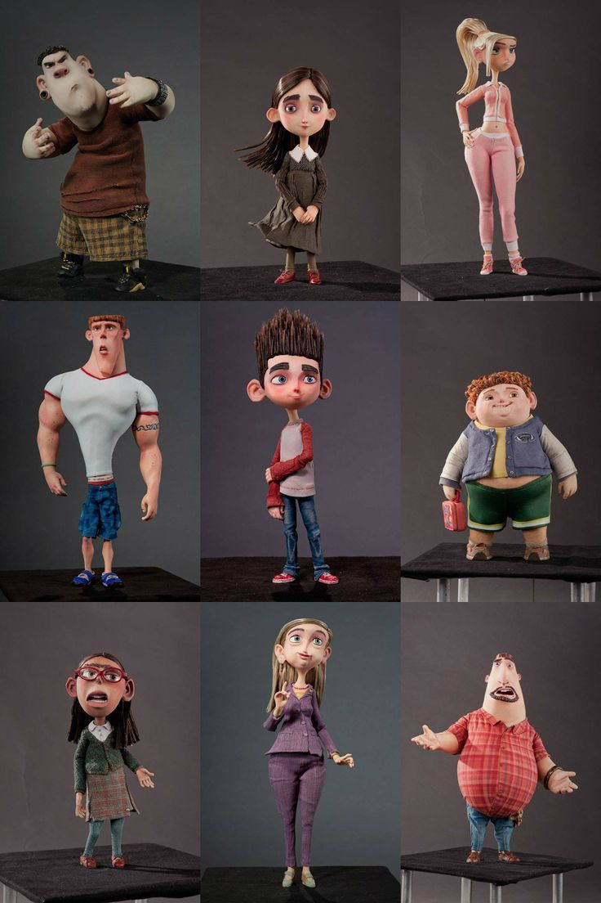
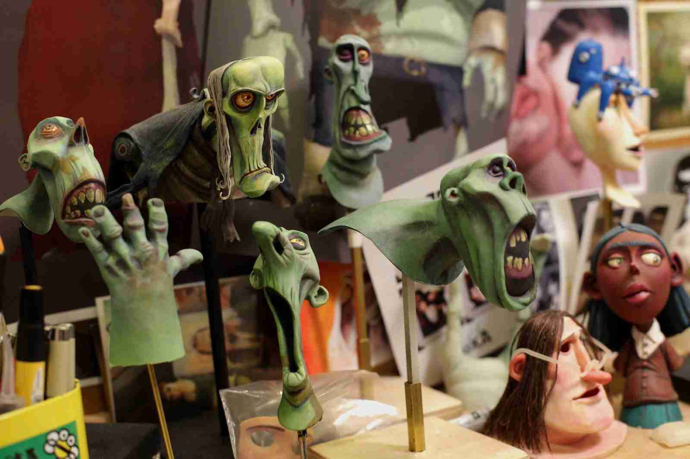
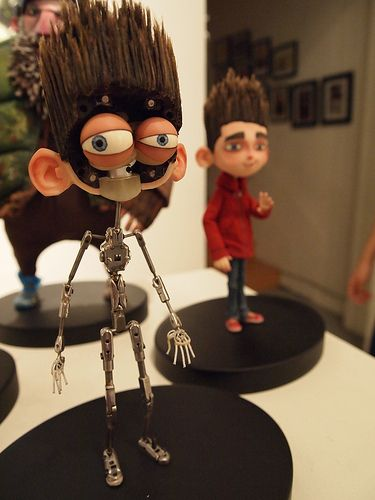

ParaNorman
Ei, prepare a pipoca! Você sabia que o Norman consegue bater um papo super de boa com os mortos? Pois é! Enquanto toda a cidade acha o coitado uma figura esquisita, ele se torna a última barreira física entre os vivos e uma horda de zumbis furiosos despertados por uma antiga maldição de bruxa de 300 anos atrás! 🧟♂️✨
behind the scenes
🎬 Play nos Bastidores Oficiais
💡 10 Segredos Inacreditáveis de produção!

1. Cabelo Humano Real!
O cabelo espetado do Norman foi feito com fios de cabelo humano real costurados à mão! Usaram arames de cobre internos revestidos de gel médico ultra-forte para mantê-lo congelado no ar.

2. Revolução Industrial 3D
Foi o primeiro longa da história a usar impressoras 3D coloridas de poeira de gesso para criar rostos. O Norman tinha 8.800 peças de expressões que se encaixavam na cabeça usando mini-ímãs!

3. Alta Costura sob o Microscópio
Roupas normais ficariam duras e sem caimento nos bonecos. A equipe fiou linhas especiais finíssimas e usou agulhas cirúrgicas para costurar calças e jaquetas proporcionais à miniatura.

4. Pele de Silicone Fantasmagórica
Para os zumbis parecerem secos e antigos, os designers misturaram pó de silicone com texturas de marshmallow queimado e látex líquido para dar aquele efeito de pele rasgando.

5. Esqueletos Mecânicos Secretos
Por dentro de cada boneco há uma "armadura" articulada feita de juntas de metal cirúrgico de esferas. Isso garante que o boneco não saia da posição milimétrica enquanto a foto é batida.
6. Maratona de Lentidão
A paciência é surreal: uma semana inteira de trabalho de um animador em um set isolado e escuro rendia apenas de 3 a 4 segundos de gravação para o filme final!
7. Carros com Suspensão Real
A icônica van usada pelos adolescentes no filme tinha pneus de borracha infláveis reais e pequenas molas de metal na suspensão para tremer realisticamente a cada frame.
8. Cenários de Papelão Nobre
As folhas das árvores de Blithe Hollow foram cortadas a laser uma a uma em folhas finas de cartolina importada e presas aos galhos por micro arames maleáveis.
9. Sons Orgânicos
Para os barulhos dos passos dos zumbis arrastando os pés, os dubladores de efeitos andaram sobre sacos de areia molhada e cascas de ovos triturados no estúdio de áudio.
10. 32 Meses de Flash
O filme demorou mais de 3 anos de produção contínua, batendo milhões de fotos digitais brutas com câmeras DSLR profissionais adaptadas antes da montagem final de cinema.